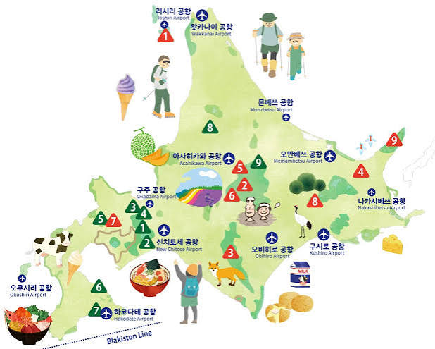

사진: ray.k · Wikimedia Commons (CC BY 2.0)
DISCOVER HOKKAIDO
한 번의 여행에
계절을 가득 담아요.
바다와 화산, 너른 초원과 활기찬 도시가 한 섬 안에 펼쳐집니다. 가고 싶은 곳을 고르고, 그 계절에만 만날 수 있는 장면을 찾아보세요.
홋카이도 공식 관광 사이트 ↗A LITTLE FARTHER NORTH
일본의 북쪽,
홋카이도로.
일본 최북단의 큰 섬, 홋카이도. 삿포로와 하코다테의 도시 여행부터 동쪽의 국립공원까지 지역마다 전혀 다른 풍경을 만날 수 있어요.
지역별 여행지 보기 ↗ HOKKAIDO

43° N
NORTH
NORTH
CHOOSE YOUR JOURNEY
홋카이도에서 하고 싶은 것
여행의 취향에 따라
다음 페이지에서 더 살펴보세요.


여행 정보 확인
최신 소식 확인 ↗운행 시간·개방 일정은 계절과 날씨에 따라 바뀔 수 있어요. 각 관광지 공식 페이지에서 최신 내용을 확인해 주세요.